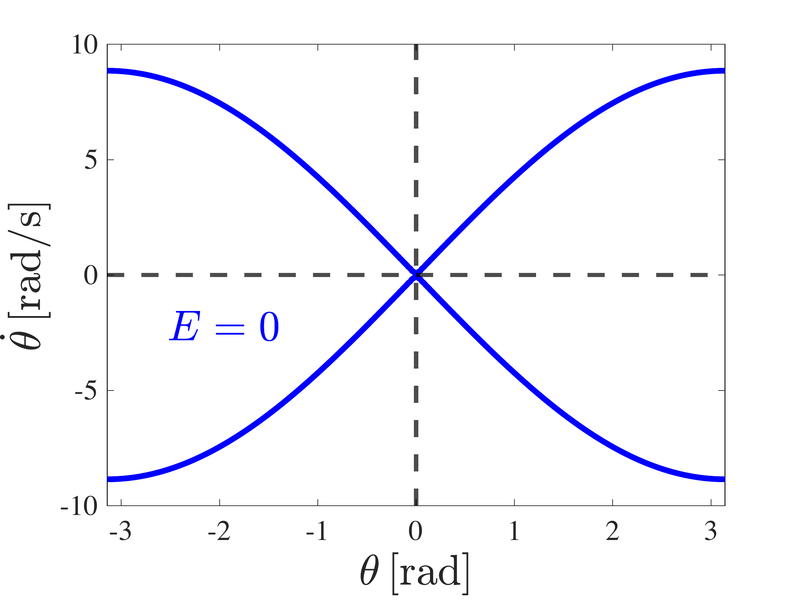
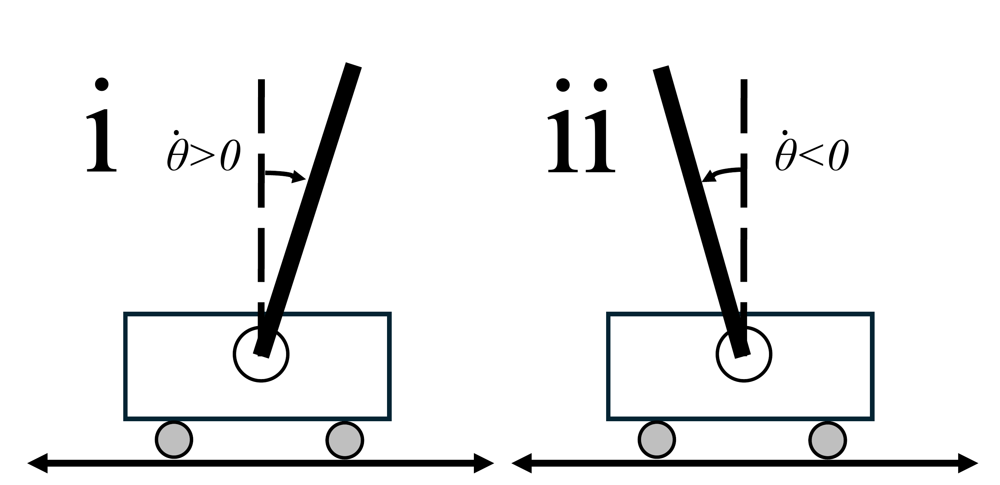
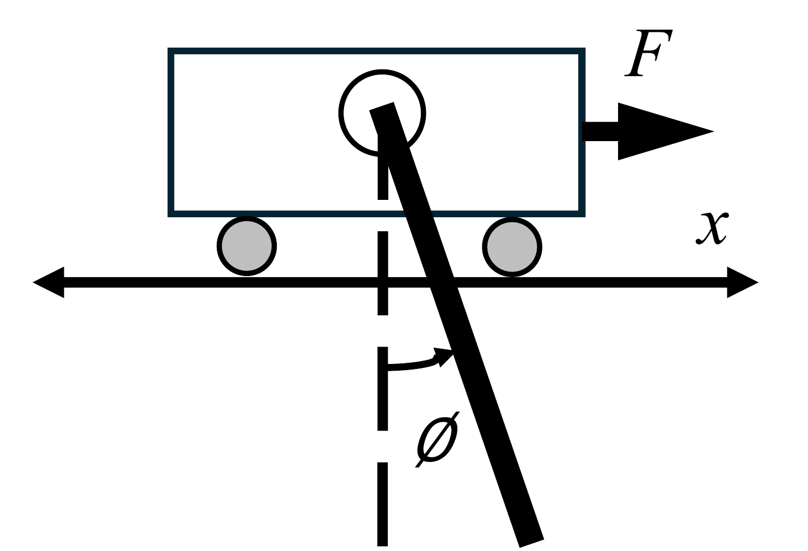
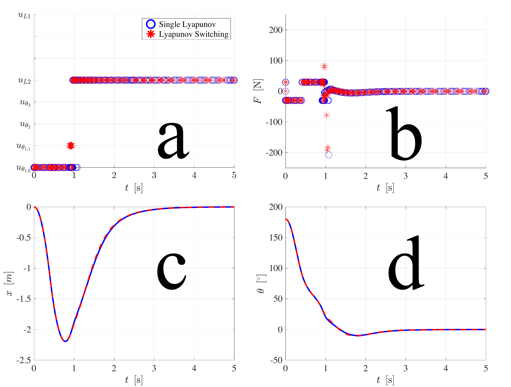
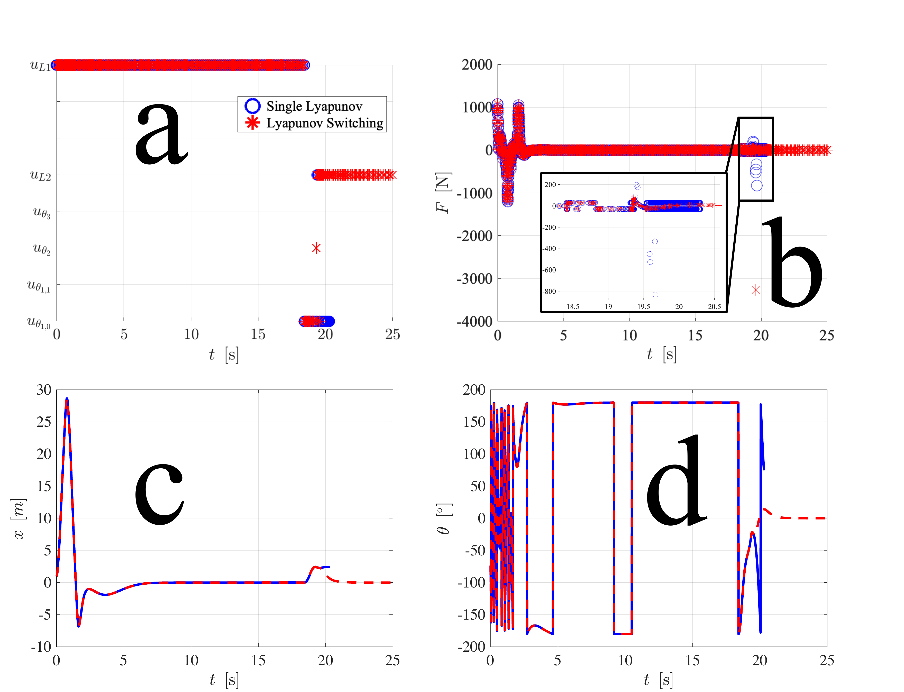
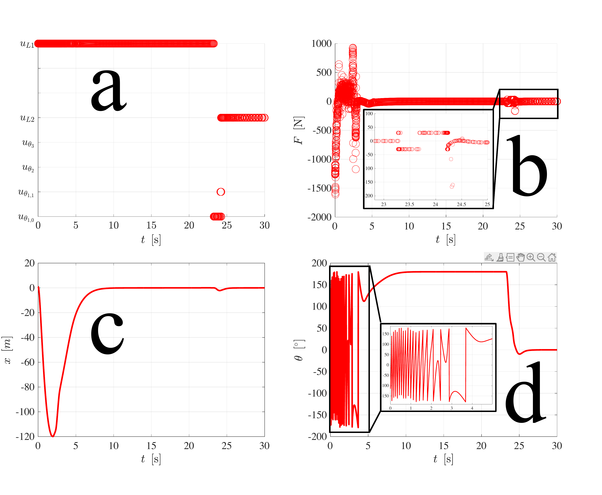
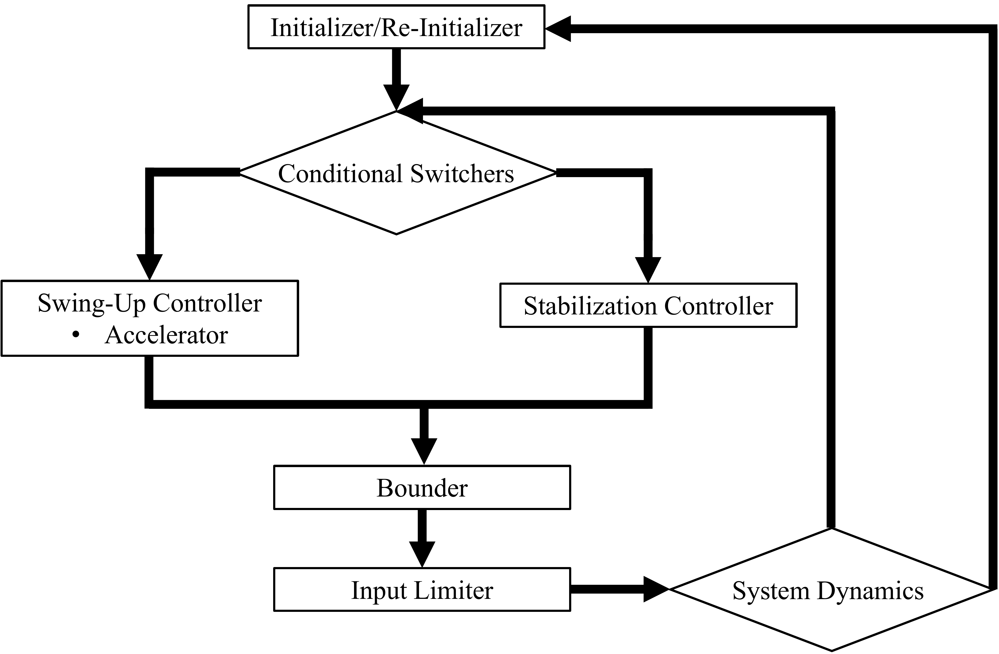

The rod is swung from hanging to upright by switching among energy-based Lyapunov controllers, then balanced by a linear quadratic regulator while the cart returns to the origin.
Abstract
This work explores state-of-the-art approaches for stabilizing an inverted pendulum on a cart system, which has been used for over a century to demonstrate ideas in nonlinear and linear control theory, owing to its simple practical implementation yet complex system dynamics. We introduce energy-based control methods and propose a simple linear controller to quickly force the system to the downward equilibrium before swing-up. By constraining the system to start from a stable equilibrium configuration, the problem of global stability is reduced to ensuring that the system can follow all heteroclinic orbits that start very close to the downward equilibrium. Multiple Lyapunov functions are employed to ensure non-zero tracking, increasing the system's domain of attraction that is achieved by traditional controllers based on a single Lyapunov function. We stabilize our inverted pendulum system in the upright configuration through pole placement using a linear quadratic regulator known for fast settling times and smooth system response and through sliding mode controllers known for their robustness to disturbances and model uncertainties. While sliding mode controllers exhibit faster stabilization of the pendulum angle, they fail to stabilize the cart position in a reasonable amount of time. The paper concludes by suggesting various controller techniques that can enhance the swing-up and stabilization controller architectures, leaving room for future exploration. To facilitate further research and education, an open-source MATLAB simulation code is provided, encapsulating the system dynamics and controller designs. This resource offers flexibility for customization, making it a valuable tool for both researchers and educators working with inverted pendulum systems.
A rod of mass m and length l is pivoted on a cart of mass M that moves along a single axis, driven only by a horizontal force F on the cart. The rod angle is not directly actuated, so the system is underactuated. Because the equations of motion involve trigonometric terms in the rod angle, the system is inherently nonlinear and is not feedback linearizable, and it loses controllability once the rod swings past the horizontal. The upright position is an unstable equilibrium and the hanging position is a stable one, which is why the smallest disturbance topples the upright rod.
Energy-based swing-up with multiple Lyapunov functions


Swing-up drives the rod's mechanical energy toward the value it has at the upright position. A single energy-based Lyapunov function pushes that energy to zero, but infinitely many non-upright states also have zero energy (left), so the rod can settle into the wrong place. To fix this, the swing-up law switches among three Lyapunov functions chosen so that the function being tracked is zero only at the upright state and positive everywhere else. The switching specifically handles the two configurations (right) where a single function stops decreasing, which enlarges the set of initial conditions from which the rod reaches the top.
Forcing global stability from the downward equilibrium

If the rod angle, angular velocity, or cart position start far from equilibrium, swinging up and then settling the cart at the origin can fail or take a very long time. The proposed down-controller sidesteps this: a simple linear feedback law, designed by pole placement, first drives the rod to the stable downward equilibrium and the cart toward the origin. Because the hanging position is stable, the system reaches it reliably. From that known starting point, achieving global stability reduces to following the heteroclinic orbits that lead from the downward equilibrium up to the unstable upright one. The controller deliberately injects no energy once the rod is past horizontal, so it settles the system rather than fighting it.
Stabilization: LQR pole placement versus sliding mode
Once the rod is near upright, a stabilizing controller takes over. Two are compared on the same system. The linear quadratic regulator, tuned by pole placement, is known for fast settling and smooth response; it consistently brings both the rod angle and the cart position to rest within about three seconds for any initial state with the cart within 1.5 m of the origin, near-zero cart velocity, near-zero angular velocity, and a rod angle inside the upright basin. The sliding mode controllers, prized for robustness to disturbances and model error, settle the rod angle up to two seconds faster, but across every variation tried they failed to settle the cart position in a reasonable time, with the cart drift taking more than five seconds. For this system the LQR is therefore the more practical upright stabilizer.
Result: balancing in a single swing from rest

Starting from the rod hanging at rest with the cart at the origin, the single Lyapunov and the switching controllers behave almost identically and stabilize the rod in a single swing. The panels track the controller input, the force on the cart, the cart position, and the rod angle as it climbs from hanging to upright. This one-swing behavior holds across a wide range of initial conditions, though not all of them, which motivates the switching design. The two accompanying clips show the single Lyapunov controller (Movie 1) and the switching controller (Movie 2) for this case.
Result: recovering from a fast initial spin

Here the rod starts at a large angle with a fast initial spin and the cart offset from the origin. The down-controller first brings the rod to the hanging position, and after a few seconds the swing-up controllers activate. The switching controller stabilizes the rod in one swing, whereas the single Lyapunov controller fails and the cart drifts away from the origin. This is the case that most clearly separates the two designs. The clips show the single Lyapunov controller (Movie 3) and the switching controller (Movie 4).
Result: global stabilization from far-from-equilibrium states

Even when the system starts far from any equilibrium, the down-controller forces it to the hanging configuration first, and the switching controller then stabilizes the rod in a single swing. This is the global-stability argument in action: by routing every initial condition through the stable downward state, the same swing-up and stabilization stack works from arbitrary starting points. The accompanying clip is Movie 5.
Controller architecture and extensions

The paper also lays out optional building blocks that can be layered onto the swing-up and stabilization controllers: a re-initializer that returns the system to the downward equilibrium when the cart wanders too far, an accelerator that speeds up the early swing-up phase, a bounder that keeps the cart near the origin, and an input limiter that clips spikes in the control signal. These pieces interact and have coupled effects, so they are left as tuning knobs for future work. The complete dynamics and every controller in this diagram are implemented in the open-source MATLAB simulator, so each block can be switched on, tuned, and studied directly.
Supplementary videos
Animations of the simulated cart-pole under each controller and initial condition
Movie 1: swing-up from rest, single Lyapunov
Rod hanging at rest, single Lyapunov controller.
Movie 2: swing-up from rest, switching
Rod hanging at rest, Lyapunov switching controller.
Movie 3: fast initial spin, single Lyapunov
Large angle and fast spin, single Lyapunov controller (drifts).
Movie 4: fast initial spin, switching
Large angle and fast spin, switching controller (one swing).
@article{rible2024nonlinear,
title = {Nonlinear Swing-Up and Stabilization of Inverted Pendulum on a Cart
Using Energy Control Method Based on Multiple Lyapunov Functions,
Sliding Mode Control, and Pole Placement},
author = {Rible, Gene Patrick},
journal = {Preprints.org},
year = {2024},
month = {May},
doi = {10.20944/preprints202405.1003.v1},
url = {https://doi.org/10.20944/preprints202405.1003.v1},
publisher = {MDPI},
note = {Preprint}
}
Code and contributions
The open-source MATLAB simulation code accompanying this work is available on
GitHub.
Comments, issues, and contributions are welcome.
Discussion
Questions, comments, and follow-up work in the control and robotics community. Sign in with GitHub to post.